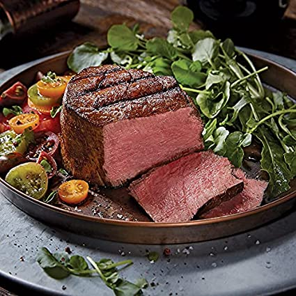

Filet Mignon Steak Recipe

Description:
We get it: you deserve a treat. It’s been a hard day or maybe even a hard week and well, you deserve a little bit of luxury: a lit candle, some wine, and some nice music.
Oh, and don’t forget the Best. Meal. Ever.
Luckily, our filet mignon fits the bill: it simplifies a fancy restaurant dish into a homemade extravagance and the best part?
Our recipe serves just one: that’s right. It’s ALL for you!
Credit For the Recipe:
Jody Tixier & Alexis Deboschnek from the Tasty Team
Ingredients:
- 6 oz filet mignon
- coarse salt
- freshly ground black pepper
- 1 tablespoon grapeseed oil, or other high-heat, neutral oil of choice
- 2 tablespoons unsalted butter
- 2 sprigs fresh rosemary
- 1 clove garlic
Steps:
- On a cutting board, pat the filet mignon dry with paper towels and let sit at room temperature for 20-30 minutes.
- Preheat the oven to 450˚F (230˚C).
- Generously season all sides of the filet mignon with salt and pepper.
- Heat a medium, oven-safe stainless steel or cast iron skillet over high heat for 5 minutes. Add the grapeseed oil.
- Once the oil beings to smoke, add the filet mignon to the pan. Cook without moving for 2-3 minutes, until a crust has formed.
- Use tongs to flip the steak over, then add the butter, rosemary, and garlic to the pan.
- Tilt the pan and spoon the butter continuously over the steak for 2-3 minutes.
- Transfer the pan to the oven for 7 minutes for a medium rare steak.
- Transfer the steak to a cutting board and let rest for at least 10 minutes before slicing.
- Enjoy!